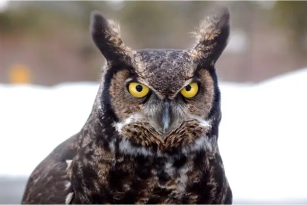

Featuring a mesmerizing array of brown-speckled feathers, the Great Horned Owl exemplifies remarkable versatility, thriving within a vast array of habitats spanning deserts, wetlands, grasslands, urban areas, and forests.
These magnificent creatures are renowned for their nocturnal lifestyle, effortlessly blending into their surroundings through effective camouflage. Interestingly, the Great Horned Owl’s adaptability extends beyond North America, as it can be found as far south as Brazil.
While their striking “horns” are, in fact, feathered projections known as plumicorns, the exact purpose of these unique features remains a subject of speculation. They may serve as visual markers or facilitate communication with fellow avian species, yet further research is necessary to unravel their precise function.
Renowned as early breeders in North America, the Great Horned Owls initiate their selection process as early as January. Male owls take the lead in scouting out the perfect nesting spot, engaging in captivating aerial displays and displaying stomping behaviours to entice potential mates.
Rather than constructing their own nests, they favour repurposing abandoned nests left by larger birds such as eagles or hawks. The nesting sites they choose exhibit remarkable diversity, ranging from caves and cliffs to even cacti.
These owls are opportunistic predators with a versatile palate, renowned for their adaptability in hunting. In Minnesota, their diet varies according to seasonal and prey availability, with small mammals like voles, mice, and rabbits forming their primary food source.
However, their diet extends beyond small mammals, encompassing a wide array of animal groups, including birds, reptiles, amphibians, and insects. With their sharp talons and beaks, they rely heavily on their hunting prowess, predominantly engaging in nocturnal activities.
Despite not currently being categorized as a threatened species, the population of Great Horned Owls in North America has experienced a significant decline over the past four decades, largely attributed to human activities. An alarming 65% of owl fatalities can be attributed to human actions, including shootings, trapping, car collisions, power line electrocution, and poisoning from rat poisons.
Tragically, in the past, farmers and hunters regarded these owls as pests due to their predation on domestic chickens and small game, leading to centuries of hunting and killing, which regrettably continues today through illegal poaching.